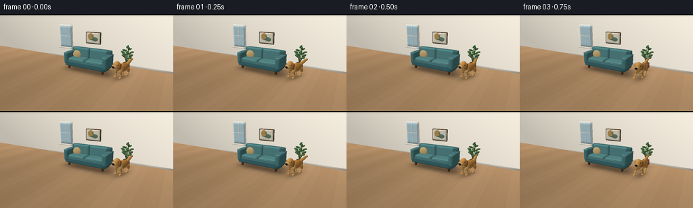
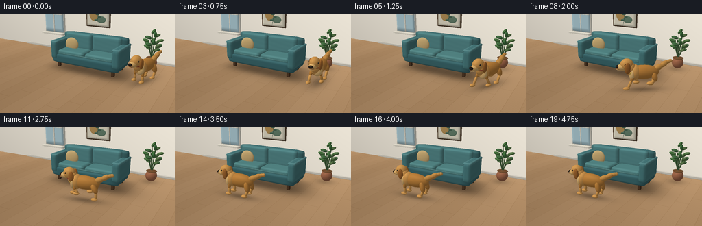
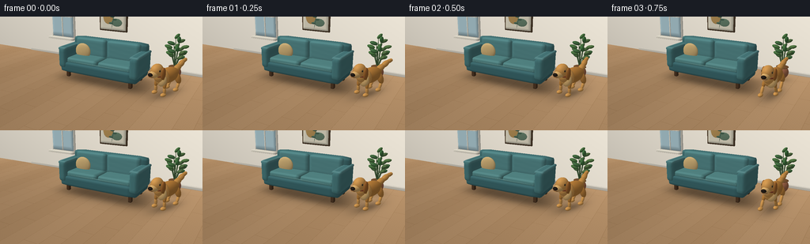
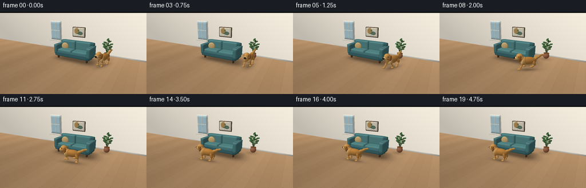

CODING AGENTS AS PIXEL WORLD MODELS
traex/GPT-6.1-Sol · dynamic_spatial_relationship_0003
点击播放 · 原生 RGB 像素
逐轮保存的候选
回放视频、检查图与代码变化。
每份候选均可单独播放。实际图片检查记录在下方工具轨迹中。
候选 01播放与检查图
点击播放 · 原生 RGB 像素


展开代码变化
--- 上一保存版本
+++ 本次保存版本
@@ -0,0 +1,239 @@
+from pathlib import Path
+import math
+import numpy as np
+from PIL import Image
+import artifact_io
+
+ROOT=Path(__file__).resolve().parent
+W,H=768,432
+S=3
+CAM=np.array([5.3,4.0,9.6]); TARGET=np.array([.1,.65,.5])
+FWD=(TARGET-CAM); FWD/=np.linalg.norm(FWD)
+RIGHT=np.cross(FWD,[0,1,0]); RIGHT/=np.linalg.norm(RIGHT)
+UP=np.cross(RIGHT,FWD)
+FOCAL=660.
+LIGHT=np.array([-3,7,4.5]); LIGHT/=np.linalg.norm(LIGHT)
+
+class Renderer:
+ def __init__(self,img,depth): self.img=img.copy(); self.depth=depth.copy()
+ def project(self,p):
+ d=p-CAM; z=d@FWD
+ return np.stack([W/2+FOCAL*(d@RIGHT)/z,H/2-FOCAL*(d@UP)/z,z],axis=-1)
+ def mesh(self,verts,norms,faces,color,texture=0):
+ verts=np.asarray(verts); norms=np.asarray(norms); faces=np.asarray(faces)
+ pp=self.project(verts)
+ diffuse=np.maximum(norms@LIGHT,0)
+ view=CAM-verts; view/=np.linalg.norm(view,axis=1)[:,None]
+ half=view+LIGHT; half/=np.linalg.norm(half,axis=1)[:,None]
+ gloss=np.maximum((half*norms).sum(1),0)**34
+ light=.56+.44*diffuse
+ cols=np.asarray(color)[None,:]*light[:,None]+gloss[:,None]*(8 if texture else 15)
+ if texture:
+ noise=np.sin(verts[:,0]*83+verts[:,1]*67+verts[:,2]*56)*np.sin(verts[:,1]*111-verts[:,2]*97)
+ cols+=noise[:,None]*texture
+ for f in faces:
+ p=pp[f]; minx=max(0,int(np.floor(p[:,0].min()))); maxx=min(W-1,int(np.ceil(p[:,0].max())))
+ miny=max(0,int(np.floor(p[:,1].min()))); maxy=min(H-1,int(np.ceil(p[:,1].max())))
+ if minx>maxx or miny>maxy: continue
+ a,b,c=p
+ den=(b[1]-c[1])*(a[0]-c[0])+(c[0]-b[0])*(a[1]-c[1])
+ if abs(den)<1e-8: continue
+ yy,xx=np.mgrid[miny:maxy+1,minx:maxx+1]
+ u=((b[1]-c[1])*(xx+.5-c[0])+(c[0]-b[0])*(yy+.5-c[1]))/den
+ v=((c[1]-a[1])*(xx+.5-c[0])+(a[0]-c[0])*(yy+.5-c[1]))/den
+ q=1-u-v
+ dep=u*a[2]+v*b[2]+q*c[2]
+ zpart=self.depth[miny:maxy+1,minx:maxx+1]
+ mask=(u>=-1e-6)&(v>=-1e-6)&(q>=-1e-6)&(dep<zpart)
+ if not mask.any():continue
+ col=u[...,None]*cols[f[0]]+v[...,None]*cols[f[1]]+q[...,None]*cols[f[2]]
+ self.img[miny:maxy+1,minx:maxx+1][mask]=col[mask]
+ zpart[mask]=dep[mask]
+
+# Smooth surfaces, shaded with analytical normals, rasterized directly in numpy.
+def ellipsoid(r,center,scale,color,rotation=None,texture=0,nlat=15,nlon=26):
+ theta=np.linspace(0,np.pi,nlat+1); phi=np.linspace(0,2*np.pi,nlon,endpoint=False)
+ unit=np.array([[np.sin(t)*np.cos(p),np.cos(t),np.sin(t)*np.sin(p)] for t in theta for p in phi])
+ scale=np.array(scale); v=unit*scale; n=unit/scale; n/=np.linalg.norm(n,axis=1)[:,None]
+ if rotation is not None:v=v@rotation.T;n=n@rotation.T
+ v+=center
+ faces=[]
+ for i in range(nlat):
+ for j in range(nlon):
+ a=i*nlon+j;b=i*nlon+(j+1)%nlon;c=(i+1)*nlon+j;d=(i+1)*nlon+(j+1)%nlon
+ faces.extend([[a,c,b],[b,c,d]])
+ r.mesh(v,n,faces,color,texture)
+
+def rounded_box(r,center,size,radius,color,texture=0,n=9):
+ half=np.array(size)/2; core=half-radius
+ verts=[]; norms=[];faces=[]
+ for axis in range(3):
+ rem=[j for j in range(3) if j!=axis]
+ for sign in [-1,1]:
+ start=len(verts)
+ for i in range(n+1):
+ for j in range(n+1):
+ p=np.zeros(3);p[axis]=sign*half[axis];p[rem[0]]=(2*i/n-1)*half[rem[0]];p[rem[1]]=(2*j/n-1)*half[rem[1]]
+ a=np.clip(p,-core,core); d=p-a; normal=d/np.linalg.norm(d)
+ verts.append(a+radius*normal+center);norms.append(normal)
+ for i in range(n):
+ for j in range(n):
+ a=start+i*(n+1)+j;b=a+1;c=a+n+1;d=c+1
+ faces.extend([[a,b,c],[b,d,c]])
+ r.mesh(verts,norms,faces,color,texture)
+
+def segment(r,a,b,width,color,width2=None,texture=0):
+ a=np.array(a);b=np.array(b);d=b-a;ln=np.linalg.norm(d); up=d/ln
+ rt=np.cross(up,[0,0,1])
+ if np.linalg.norm(rt)<.01:rt=np.cross(up,[1,0,0])
+ rt/=np.linalg.norm(rt);fw=np.cross(rt,up)
+ rotation=np.stack([rt,up,fw],axis=1)
+ ellipsoid(r,(a+b)/2,[width,ln*.5+width*.65,width if width2 is None else width2],color,rotation,texture,nlat=10,nlon=18)
+
+# Ray-plane background with wood grain, warm daylight and soft contact shadows.
+yy,xx=np.mgrid[0:H,0:W]
+rays=FWD+((xx+.5-W/2)/FOCAL)[...,None]*RIGHT-((yy+.5-H/2)/FOCAL)[...,None]*UP
+ft=-CAM[1]/rays[:,:,1]; wt=(-2.1-CAM[2])/rays[:,:,2]
+floor=ft<wt
+world=CAM+np.where(floor,ft,wt)[...,None]*rays
+px,py,pz=world[:,:,0],world[:,:,1],world[:,:,2]
+base=np.zeros((H,W,3),dtype=float)
+# floorboards run into the room, staggered joints
+board=np.floor((px+8)/.53)
+variation=3*np.sin(board*17.7)
+grain=1.9*np.sin(px*170+np.sin(pz*2)*2)+1*np.sin(px*410+pz*4)
+seams=(np.mod(px+8,.53)<.010)| (np.mod(pz+board*.61,2.3)<.012)
+light=1.03-.02*(pz+2)+.035*np.sin(px*.4)
+for i,c in enumerate([175,139,101]):base[:,:,i]=(c+variation+grain-seams*14)*light
+wall_light=np.clip(.91+.07*(px+3)/7+.07*py/4,.83,1.13)
+for i,c in enumerate([231,224,210]):base[:,:,i]=np.where(floor,base[:,:,i],c*wall_light)
+# Sofa and plant ambient occlusion, soft projected shadow.
+shadow=.29*np.exp(-((px-.16)/1.95)**6-((pz-.12)/.89)**4)
+shadow+=.17*np.exp(-((px-.55)/2.05)**4-((pz-.55)/.76)**2)
+shadow+=.19*np.exp(-((px-2.52)/.43)**2-((pz+1.20)/.40)**2)
+base[floor]*=(1-shadow[floor,None])
+depth=np.where(floor,ft,wt)
+r=Renderer(base,depth)
+# Architecture: skirting, a framed abstract botanical picture, left tall window.
+rounded_box(r,[0,.065,-2.04],[12,.13,.09],.018,[224,218,204])
+rounded_box(r,[-.65,2.10,-2.00],[1.45,1.04,.08],.02,[95,76,56])
+rounded_box(r,[-.65,2.10,-1.951],[1.32,.91,.025],.01,[240,233,210])
+# understated abstract picture forms
+ellipsoid(r,[-.88,2.22,-1.93],[.27,.31,.014],[195,156,94])
+ellipsoid(r,[-.43,2.01,-1.90],[.27,.18,.014],[107,135,113])
+segment(r,[-.68,1.74,-1.88],[-.56,2.40,-1.88],.011,[75,106,91])
+for x,y,sg in [(-.58,2.28,-1),(-.6,2.15,1),(-.65,1.97,-1)]:
+ ellipsoid(r,[x+sg*.07,y,-1.875],[.11,.045,.012],[79,111,91])
+# window partly visible on left
+rounded_box(r,[-3.57,2.06,-2.00],[1.45,2.18,.10],.023,[250,245,230])
+rounded_box(r,[-3.57,2.06,-1.94],[1.29,2.01,.055],.009,[185,216,225])
+rounded_box(r,[-3.57,2.06,-1.9],[.055,2.0,.05],.008,[246,241,224])
+rounded_box(r,[-3.57,2.10,-1.9],[1.29,.055,.05],.008,[246,241,224])
+rounded_box(r,[-3.57,.98,-1.82],[1.58,.10,.28],.015,[243,237,220])
+# sofa wooden feet
+for x in [-1.43,1.43]:
+ for z in [-.42,.58]:rounded_box(r,[x,.18,z],[.14,.36,.15],.025,[82,58,39])
+# upholstered body, back and arms
+rounded_box(r,[0,.44,.08],[3.43,.45,1.4],.12,[61,107,111],1.1)
+rounded_box(r,[0,1.01,-.43],[3.4,1.10,.40],.13,[73,123,125],1.2)
+for x in [-1.60,1.60]:
+ rounded_box(r,[x,.84,.08],[.36,.88,1.48],.13,[75,126,128],1.2)
+ rounded_box(r,[x,1.215,.08],[.37,.12,1.42],.055,[89,139,140],.8)
+for x in [-.75,.75]:
+ rounded_box(r,[x,.72,.16],[1.46,.26,1.04],.105,[88,141,140],1.3)
+ rounded_box(r,[x,1.17,-.225],[1.45,.77,.28],.10,[88,142,143],1.3)
+# visible piping at front edge and seams
+segment(r,[-1.43,.702,.674],[1.43,.702,.674],.013,[108,156,153])
+# accent pillow tucked at left
+ang=.15;rot=np.array([[np.cos(ang),-np.sin(ang),0],[np.sin(ang),np.cos(ang),0],[0,0,1]])
+ellipsoid(r,[-1.05,1.02,.02],[.37,.34,.105],[214,182,124],rot,1.3)
+# small plant at back right, terra-cotta pot and leaves
+ellipsoid(r,[2.56,.28,-1.33],[.27,.28,.27],[165,106,76],texture=1)
+ellipsoid(r,[2.56,.51,-1.33],[.255,.045,.255],[123,85,52])
+for i in range(9):
+ a=i*2.4;top=np.array([2.56+.24*np.cos(a),1.15+(i%4)*.18,-1.33+.22*np.sin(a)])
+ segment(r,[2.56,.46,-1.33],top,.019,[72,101,64])
+ for f in [.68,1.0]:
+ c=np.array([2.56,.46,-1.33])*(1-f)+top*f
+ dr=np.array([.22*np.cos(a+.7),.06,.22*np.sin(a+.7)])
+ segment(r,c,c+dr,.069,[70+(i%3)*7,113+(i%2)*8,68],width2=.12)
+static=r.img.copy();staticdepth=r.depth.copy();floormask=floor & (abs(staticdepth-depth)<1e-5)
+
+# A golden dog with independently articulated paws, a soft muzzle, floppy ears and curved tail.
+def dog(renderer,x,z,angle,phase,run,elapsed):
+ co,si=np.cos(angle),np.sin(angle)
+ rot=np.array([[co,0,si],[0,1,0],[-si,0,co]])
+ bob=run*(.035+.036*np.cos(2*phase))
+ root=np.array([x,bob,z])
+ def pos(p):return root+rot@np.array(p)
+ def e(p,sc,col,extra=None,texture=1):
+ ellipsoid(renderer,pos(p),sc,col,rot if extra is None else rot@extra,texture)
+ def seg(a,b,w,col,ww=None):segment(renderer,pos(a),pos(b),w,col,ww,1)
+ gold=[193,132,61];bright=[215,156,82]; dark=[164,104,48];cream=[229,186,120]
+ # far legs before near anatomy
+ for side in [-1,1]:
+ zz=side*.19
+ for hind in [True,False]:
+ hx=.39 if hind else -.36
+ ph=phase+(np.pi if side==-1 else 0)+(1.8 if hind else 0)
+ swing=np.sin(ph)*run
+ footx=hx+.25*swing
+ footy=.074+run*.19*max(0,np.cos(ph))
+ knee=[hx+(.10 if hind else -.02)+.09*swing,.33+run*.06,zz]
+ hip=[hx,.64,zz*.78]
+ seg(hip,knee,.11 if hind else .075,gold)
+ seg(knee,[footx,footy+.03,zz],.058,bright)
+ e([footx-.065,footy,zz],[.13,.065,.085],bright)
+ e([.03,.66,0],[.61,.28,.255],gold,texture=1.5)
+ e([-.32,.66,0],[.25,.31,.27],bright,texture=1.2)
+ e([-.42,.63,.06],[.125,.27,.21],cream)
+ # tail waves; thick plume, gently upturned
+ wag=.12*np.sin(elapsed*9)
+ points=[[.49,.77,0],[.72,.87,wag*.45],[.94,1.00,wag],[1.10,1.04,wag*1.35]]
+ for i in range(3):seg(points[i],points[i+1],[.12,.105,.075][i],[201,144,72])
+ e(points[-1],[.075,.07,.065],bright)
+ # neck, rust collar, head
+ e([-.48,.80,0],[.21,.28,.21],bright)
+ e([-.50,.79,0],[.208,.075,.217],[133,65,44],texture=0)
+ e([-.62,.98,0],[.255,.24,.205],bright,texture=1.5)
+ e([-.77,.88,0],[.245,.13,.145],[225,179,110])
+ e([-.86,.826,0],[.155,.040,.111],[123,75,43])
+ e([-.864,.810,0],[.157,.031,.112],cream)
+ e([-.972,.904,0],[.074,.06,.092],[37,30,24],texture=0)
+ # ears fall beside cheeks, slight running flutter
+ for side in [-1,1]:
+ flutter=run*.08*np.sin(phase+.6)
+ e([-.54+flutter,.895,side*.208],[.115,.22,.068],dark,texture=1.4)
+ e([-.697,1.016,side*.171],[.042,.045,.026],[57,37,23],texture=0)
+ e([-.711,1.02,side*.188],[.025,.029,.013],[16,17,15],texture=0)
+ e([-.722,1.034,side*.194],[.008,.009,.007],[245,243,217],texture=0)
+ # tiny brass collar tag on the visible side
+ e([-.49,.711,.219],[.045,.055,.014],[221,179,77],texture=0)
+
+frames=[]
+for frame in range(20):
+ t=frame/4
+ u=np.clip((t-.60)/2.9,0,1)
+ # Rounded route around the right arm, into the clearly open foreground.
+ keys=np.array([[2.72,.28],[2.64,.79],[2.26,1.39],[1.54,1.86],[.56,2.08],[-.08,2.12]])
+ k=u*5;idx=min(4,int(k));f=k-idx
+ # interpolating a Catmull-Rom trajectory
+ p0=keys[max(idx-1,0)];p1=keys[idx];p2=keys[idx+1];p3=keys[min(idx+2,5)]
+ pt=.5*((2*p1)+(-p0+p2)*f+(2*p0-5*p1+4*p2-p3)*f*f+(-p0+3*p1-3*p2+p3)*f*f*f)
+ derivative=.5*((-p0+p2)+2*(2*p0-5*p1+4*p2-p3)*f+3*(-p0+3*p1-3*p2+p3)*f*f)
+ angle=np.arctan2(derivative[1],-derivative[0])
+ if t<.60:angle=1.24
+ running=float(t>.60 and u<1)
+ phase=(t-.60)*12
+ renderer=Renderer(static,staticdepth)
+ # Grounded soft shadow follows the dog without darkening the furniture.
+ dx=px-pt[0]-.06; dz=pz-pt[1]-.10
+ along=dx*np.cos(angle)-dz*np.sin(angle);cross=dx*np.sin(angle)+dz*np.cos(angle)
+ sh=.22*np.exp(-(along/.82)**2-(cross/.29)**2)+.10*np.exp(-(along/.54)**2-(cross/.19)**2)
+ renderer.img[floormask]*=(1-sh[floormask,None])
+ dog(renderer,*pt,angle,phase,running,t)
+ # Supersampling provides clean edges, no added graphics or captions.
+ im=Image.fromarray(np.uint8(np.clip(renderer.img,0,255))).resize((256,144),Image.Resampling.LANCZOS)
+ frames.append(np.array(im.convert('RGB')))
+ print('frame',frame,flush=True)
+artifact_io.save(np.stack(frames),ROOT)
候选 02播放与检查图
点击播放 · 原生 RGB 像素


展开代码变化
--- 上一保存版本 +++ 本次保存版本 @@ -7,11 +7,11 @@ ROOT=Path(__file__).resolve().parent W,H=768,432 S=3 -CAM=np.array([5.3,4.0,9.6]); TARGET=np.array([.1,.65,.5]) +CAM=np.array([5.3,4.0,9.6]); TARGET=np.array([.4,.55,1.0]) FWD=(TARGET-CAM); FWD/=np.linalg.norm(FWD) RIGHT=np.cross(FWD,[0,1,0]); RIGHT/=np.linalg.norm(RIGHT) UP=np.cross(RIGHT,FWD) -FOCAL=660. +FOCAL=1050. LIGHT=np.array([-3,7,4.5]); LIGHT/=np.linalg.norm(LIGHT) class Renderer:
可观测工具轨迹
实际执行的命令与返回图片。
命令 1exit 0
/bin/bash -lc 'ls -la; cat prompt.txt; cat GENERATION_RULES.md; cat task_spec.json'
命令 2exit 0
/bin/bash -lc "cat artifact_io.py; python - <<'PY' import importlib.util for m in ['numpy','PIL','scipy']: print(m, bool(importlib.util.find_spec(m))) PY"
命令 3exit 0
/bin/bash -lc "cat > generate.py <<'PY'
from pathlib import Path
import math
import numpy as np
from PIL import Image
import artifact_io
ROOT=Path(__file__).resolve().parent
W,H=768,432
S=3
CAM=np.array([5.3,4.0,9.6]); TARGET=np.array([.1,.65,.5])
FWD=(TARGET-CAM); FWD/=np.linalg.norm(FWD)
RIGHT=np.cross(FWD,[0,1,0]); RIGHT/=np.linalg.norm(RIGHT)
UP=np.cross(RIGHT,FWD)
FOCAL=660.
LIGHT=np.array([-3,7,4.5]); LIGHT/=np.linalg.norm(LIGHT)
class Renderer:
def __init__(self,img,depth): self.img=img.copy(); self.depth=depth.copy()
def project(self,p):
d=p-CAM; z=d@FWD
return np.stack([W/2+FOCAL*(d@RIGHT)/z,H/2-FOCAL*(d@UP)/z,z],axis=-1)
def mesh(self,verts,norms,faces,color,texture=0):
verts=np.asarray(verts); norms=np.asarray(norms); faces=np.asarray(faces)
pp=self.project(verts)
diffuse=np.maximum(norms@LIGHT,0)
view=CAM-verts; view/=np.linalg.norm(view,axis=1)[:,None]
half=view+LIGHT; half/=np.linalg.norm(half,axis=1)[:,None]
gloss=np.maximum((half*norms).sum(1),0)**34
light=.56+.44*diffuse
cols=np.asarray(color)[None,:]*light[:,None]+gloss[:,None]*(8 if texture else 15)
if texture:
noise=np.sin(verts[:,0]*83+verts[:,1]*67+verts[:,2]*56)*np.sin(verts[:,1]*111-verts[:,2]*97)
cols+=noise[:,None]*texture
for f in faces:
p=pp[f]; minx=max(0,int(np.floor(p[:,0].min()))); maxx=min(W-1,int(np.ceil(p[:,0].max())))
miny=max(0,int(np.floor(p[:,1].min()))); maxy=min(H-1,int(np.ceil(p[:,1].max())))
if minx>maxx or miny>maxy: continue
a,b,c=p
den=(b[1]-c[1])*(a[0]-c[0])+(c[0]-b[0])*(a[1]-c[1])
if abs(den)<1e-8: continue
yy,xx=np.mgrid[miny:maxy+1,minx:maxx+1]
u=((b[1]-c[1])*(xx+.5-c[0])+(c[0]-b[0])*(yy+.5-c[1]))/den
v=((c[1]-a[1])*(xx+.5-c[0])+(a[0]-c[0])*(yy+.5-c[1]))/den
q=1-u-v
dep=u*a[2]+v*b[2]+q*c[2]
zpart=self.depth[miny:maxy+1,minx:maxx+1]
mask=(u>=-1e-6)&(v>=-1e-6)&(q>=-1e-6)&(dep<zpart)
if not mask.any():continue
col=u[...,None]*cols[f[0]]+v[...,None]*cols[f[1]]+q[...,None]*cols[f[2]]
self.img[miny:maxy+1,minx:maxx+1][mask]=col[mask]
zpart[mask]=dep[mask]
# Smooth surfaces, shaded with analytical normals, rasterized directly in numpy.
def ellipsoid(r,center,scale,color,rotation=None,texture=0,nlat=15,nlon=26):
theta=np.linspace(0,np.pi,nlat+1); phi=np.linspace(0,2*np.pi,nlon,endpoint=False)
unit=np.array([[np.sin(t)*np.cos(p),np.cos(t),np.sin(t)*np.sin(p)] for t in theta for p in phi])
scale=np.array(scale); v=unit*scale; n=unit/scale; n/=np.linalg.norm(n,axis=1)[:,None]
if rotation is not None:v=v@rotation.T;n=n@rotation.T
v+=center
faces=[]
for i in range(nlat):
for j in range(nlon):
a=i*nlon+j;b=i*nlon+(j+1)%nlon;c=(i+1)*nlon+j;d=(i+1)*nlon+(j+1)%nlon
faces.extend([[a,c,b],[b,c,d]])
r.mesh(v,n,faces,color,texture)
def rounded_box(r,center,size,radius,color,texture=0,n=9):
half=np.array(size)/2; core=half-radius
verts=[]; norms=[];faces=[]
for axis in range(3):
rem=[j for j in range(3) if j"'!=axis]
for sign in [-1,1]:
start=len(verts)
for i in range(n+1):
for j in range(n+1):
p=np.zeros(3);p[axis]=sign*half[axis];p[rem[0]]=(2*i/n-1)*half[rem[0]];p[rem[1]]=(2*j/n-1)*half[rem[1]]
a=np.clip(p,-core,core); d=p-a; normal=d/np.linalg.norm(d)
verts.append(a+radius*normal+center);norms.append(normal)
for i in range(n):
for j in range(n):
a=start+i*(n+1)+j;b=a+1;c=a+n+1;d=c+1
faces.extend([[a,b,c],[b,d,c]])
r.mesh(verts,norms,faces,color,texture)
def segment(r,a,b,width,color,width2=None,texture=0):
a=np.array(a);b=np.array(b);d=b-a;ln=np.linalg.norm(d); up=d/ln
rt=np.cross(up,[0,0,1])
if np.linalg.norm(rt)<.01:rt=np.cross(up,[1,0,0])
rt/=np.linalg.norm(rt);fw=np.cross(rt,up)
rotation=np.stack([rt,up,fw],axis=1)
ellipsoid(r,(a+b)/2,[width,ln*.5+width*.65,width if width2 is None else width2],color,rotation,texture,nlat=10,nlon=18)
# Ray-plane background with wood grain, warm daylight and soft contact shadows.
yy,xx=np.mgrid[0:H,0:W]
rays=FWD+((xx+.5-W/2)/FOCAL)[...,None]*RIGHT-((yy+.5-H/2)/FOCAL)[...,None]*UP
ft=-CAM[1]/rays[:,:,1]; wt=(-2.1-CAM[2])/rays[:,:,2]
floor=ft<wt
world=CAM+np.where(floor,ft,wt)[...,None]*rays
px,py,pz=world[:,:,0],world[:,:,1],world[:,:,2]
base=np.zeros((H,W,3),dtype=float)
# floorboards run into the room, staggered joints
board=np.floor((px+8)/.53)
variation=3*np.sin(board*17.7)
grain=1.9*np.sin(px*170+np.sin(pz*2)*2)+1*np.sin(px*410+pz*4)
seams=(np.mod(px+8,.53)<.010)| (np.mod(pz+board*.61,2.3)<.012)
light=1.03-.02*(pz+2)+.035*np.sin(px*.4)
for i,c in enumerate([175,139,101]):base[:,:,i]=(c+variation+grain-seams*14)*light
wall_light=np.clip(.91+.07*(px+3)/7+.07*py/4,.83,1.13)
for i,c in enumerate([231,224,210]):base[:,:,i]=np.where(floor,base[:,:,i],c*wall_light)
# Sofa and plant ambient occlusion, soft projected shadow.
shadow=.29*np.exp(-((px-.16)/1.95)**6-((pz-.12)/.89)**4)
shadow+=.17*np.exp(-((px-.55)/2.05)**4-((pz-.55)/.76)**2)
shadow+=.19*np.exp(-((px-2.52)/.43)**2-((pz+1.20)/.40)**2)
base[floor]*=(1-shadow[floor,None])
depth=np.where(floor,ft,wt)
r=Renderer(base,depth)
# Architecture: skirting, a framed abstract botanical picture, left tall window.
rounded_box(r,[0,.065,-2.04],[12,.13,.09],.018,[224,218,204])
rounded_box(r,[-.65,2.10,-2.00],[1.45,1.04,.08],.02,[95,76,56])
rounded_box(r,[-.65,2.10,-1.951],[1.32,.91,.025],.01,[240,233,210])
# understated abstract picture forms
ellipsoid(r,[-.88,2.22,-1.93],[.27,.31,.014],[195,156,94])
ellipsoid(r,[-.43,2.01,-1.90],[.27,.18,.014],[107,135,113])
segment(r,[-.68,1.74,-1.88],[-.56,2.40,-1.88],.011,[75,106,91])
for x,y,sg in [(-.58,2.28,-1),(-.6,2.15,1),(-.65,1.97,-1)]:
ellipsoid(r,[x+sg*.07,y,-1.875],[.11,.045,.012],[79,111,91])
# window partly visible on left
rounded_box(r,[-3.57,2.06,-2.00],[1.45,2.18,.10],.023,[250,245,230])
rounded_box(r,[-3.57,2.06,-1.94],[1.29,2.01,.055],.009,[185,216,225])
rounded_box(r,[-3.57,2.06,-1.9],[.055,2.0,.05],.008,[246,241,224])
rounded_box(r,[-3.57,2.10,-1.9],[1.29,.055,.05],.008,[246,241,224])
rounded_box(r,[-3.57,.98,-1.82],[1.58,.10,.28],.015,[243,237,220])
# sofa wooden feet
for x in [-1.43,1.43]:
for z in [-.42,.58]:rounded_box(r,[x,.18,z],[.14,.36,.15],.025,[82,58,39])
# upholstered body, back and arms
rounded_box(r,[0,.44,.08],[3.43,.45,1.4],.12,[61,107,111],1.1)
rounded_box(r,[0,1.01,-.43],[3.4,1.10,.40],.13,[73,123,125],1.2)
for x in [-1.60,1.60]:
rounded_box(r,[x,.84,.08],[.36,.88,1.48],.13,[75,126,128],1.2)
rounded_box(r,[x,1.215,.08],[.37,.12,1.42],.055,[89,139,140],.8)
for x in [-.75,.75]:
rounded_box(r,[x,.72,.16],[1.46,.26,1.04],.105,[88,141,140],1.3)
rounded_box(r,[x,1.17,-.225],[1.45,.77,.28],.10,[88,142,143],1.3)
# visible piping at front edge and seams
segment(r,[-1.43,.702,.674],[1.43,.702,.674],.013,[108,156,153])
# accent pillow tucked at left
ang=.15;rot=np.array([[np.cos(ang),-np.sin(ang),0],[np.sin(ang),np.cos(ang),0],[0,0,1]])
ellipsoid(r,[-1.05,1.02,.02],[.37,.34,.105],[214,182,124],rot,1.3)
# small plant at back right, terra-cotta pot and leaves
ellipsoid(r,[2.56,.28,-1.33],[.27,.28,.27],[165,106,76],texture=1)
ellipsoid(r,[2.56,.51,-1.33],[.255,.045,.255],[123,85,52])
for i in range(9):
a=i*2.4;top=np.array([2.56+.24*np.cos(a),1.15+(i%4)*.18,-1.33+.22*np.sin(a)])
segment(r,[2.56,.46,-1.33],top,.019,[72,101,64])
for f in [.68,1.0]:
c=np.array([2.56,.46,-1.33])*(1-f)+top*f
dr=np.array([.22*np.cos(a+.7),.06,.22*np.sin(a+.7)])
segment(r,c,c+dr,.069,[70+(i%3)*7,113+(i%2)*8,68],width2=.12)
static=r.img.copy();staticdepth=r.depth.copy();floormask=floor & (abs(staticdepth-depth)<1e-5)
# A golden dog with independently articulated paws, a soft muzzle, floppy ears and curved tail.
def dog(renderer,x,z,angle,phase,run,elapsed):
co,si=np.cos(angle),np.sin(angle)
rot=np.array([[co,0,si],[0,1,0],[-si,0,co]])
bob=run*(.035+.036*np.cos(2*phase))
root=np.array([x,bob,z])
def pos(p):return root+rot@np.array(p)
def e(p,sc,col,extra=None,texture=1):
ellipsoid(renderer,pos(p),sc,col,rot if extra is None else rot@extra,texture)
def seg(a,b,w,col,ww=None):segment(renderer,pos(a),pos(b),w,col,ww,1)
gold=[193,132,61];bright=[215,156,82]; dark=[164,104,48];cream=[229,186,120]
# far legs before near anatomy
for side in [-1,1]:
zz=side*.19
for hind in [True,False]:
hx=.39 if hind else -.36
ph=phase+(np.pi if side==-1 else 0)+(1.8 if hind else 0)
swing=np.sin(ph)*run
footx=hx+.25*swing
footy=.074+run*.19*max(0,np.cos(ph))
knee=[hx+(.10 if hind else -.02)+.09*swing,.33+run*.06,zz]
hip=[hx,.64,zz*.78]
seg(hip,knee,.11 if hind else .075,gold)
seg(knee,[footx,footy+.03,zz],.058,bright)
e([footx-.065,footy,zz],[.13,.065,.085],bright)
e([.03,.66,0],[.61,.28,.255],gold,texture=1.5)
e([-.32,.66,0],[.25,.31,.27],bright,texture=1.2)
e([-.42,.63,.06],[.125,.27,.21],cream)
# tail waves; thick plume, gently upturned
wag=.12*np.sin(elapsed*9)
points=[[.49,.77,0],[.72,.87,wag*.45],[.94,1.00,wag],[1.10,1.04,wag*1.35]]
for i in range(3):seg(points[i],points[i+1],[.12,.105,.075][i],[201,144,72])
e(points[-1],[.075,.07,.065],bright)
# neck, rust collar, head
e([-.48,.80,0],[.21,.28,.21],bright)
e([-.50,.79,0],[.208,.075,.217],[133,65,44],texture=0)
e([-.62,.98,0],[.255,.24,.205],bright,texture=1.5)
e([-.77,.88,0],[.245,.13,.145],[225,179,110])
e([-.86,.826,0],[.155,.040,.111],[123,75,43])
e([-.864,.810,0],[.157,.031,.112],cream)
e([-.972,.904,0],[.074,.06,.092],[37,30,24],texture=0)
# ears fall beside cheeks, slight running flutter
for side in [-1,1]:
flutter=run*.08*np.sin(phase+.6)
e([-.54+flutter,.895,side*.208],[.115,.22,.068],dark,texture=1.4)
e([-.697,1.016,side*.171],[.042,.045,.026],[57,37,23],texture=0)
e([-.711,1.02,side*.188],[.025,.029,.013],[16,17,15],texture=0)
e([-.722,1.034,side*.194],[.008,.009,.007],[245,243,217],texture=0)
# tiny brass collar tag on the visible side
e([-.49,.711,.219],[.045,.055,.014],[221,179,77],texture=0)
frames=[]
for frame in range(20):
t=frame/4
u=np.clip((t-.60)/2.9,0,1)
# Rounded route around the right arm, into the clearly open foreground.
keys=np.array([[2.72,.28],[2.64,.79],[2.26,1.39],[1.54,1.86],[.56,2.08],[-.08,2.12]])
k=u*5;idx=min(4,int(k));f=k-idx
# interpolating a Catmull-Rom trajectory
p0=keys[max(idx-1,0)];p1=keys[idx];p2=keys[idx+1];p3=keys[min(idx+2,5)]
pt=.5*((2*p1)+(-p0+p2)*f+(2*p0-5*p1+4*p2-p3)*f*f+(-p0+3*p1-3*p2+p3)*f*f*f)
derivative=.5*((-p0+p2)+2*(2*p0-5*p1+4*p2-p3)*f+3*(-p0+3*p1-3*p2+p3)*f*f)
angle=np.arctan2(derivative[1],-derivative[0])
if t<.60:angle=1.24
running=float(t>.60 and u<1)
phase=(t-.60)*12
renderer=Renderer(static,staticdepth)
# Grounded soft shadow follows the dog without darkening the furniture.
dx=px-pt[0]-.06; dz=pz-pt[1]-.10
along=dx*np.cos(angle)-dz*np.sin(angle);cross=dx*np.sin(angle)+dz*np.cos(angle)
sh=.22*np.exp(-(along/.82)**2-(cross/.29)**2)+.10*np.exp(-(along/.54)**2-(cross/.19)**2)
renderer.img[floormask]*=(1-sh[floormask,None])
dog(renderer,*pt,angle,phase,running,t)
# Supersampling provides clean edges, no added graphics or captions.
im=Image.fromarray(np.uint8(np.clip(renderer.img,0,255))).resize((256,144),Image.Resampling.LANCZOS)
frames.append(np.array(im.convert('"'RGB')))
print('frame',frame,flush=True)
artifact_io.save(np.stack(frames),ROOT)
PY
python generate.py"命令 4exit 1
/bin/bash -lc 'command -v ffmpeg'
命令 5exit 0
/bin/bash -lc "python - <<'PY'
p='generate.py'
s=open(p).read().replace('TARGET=np.array([.1,.65,.5])','TARGET=np.array([.4,.55,1.0])').replace('FOCAL=660.','FOCAL=1050.')
open(p,'w').write(s)
PY
python generate.py"命令 6exit 0
/bin/bash -lc "python - <<'PY'
from pathlib import Path
import numpy as np
p=Path('.')
a=np.load('pixels.npz')['pixels']
assert a.shape==(144,256,20)
assert len(list((p/'frames').glob('*.png')))==20
for name in ['generate.py','pixels.npz','index.html','inspection.png','transition_check.png']:
assert (p/name).is_file()
print('Verified 20 RGB frames, 256Ã144, 4 fps; required artifacts present.')
PY"视觉工具实际返回图片 1

视觉工具实际返回图片 2

保存候选 2 份；完成命令 6 次；可验证图片返回 2 张。原始 API 响应与完整日志保留在本地。